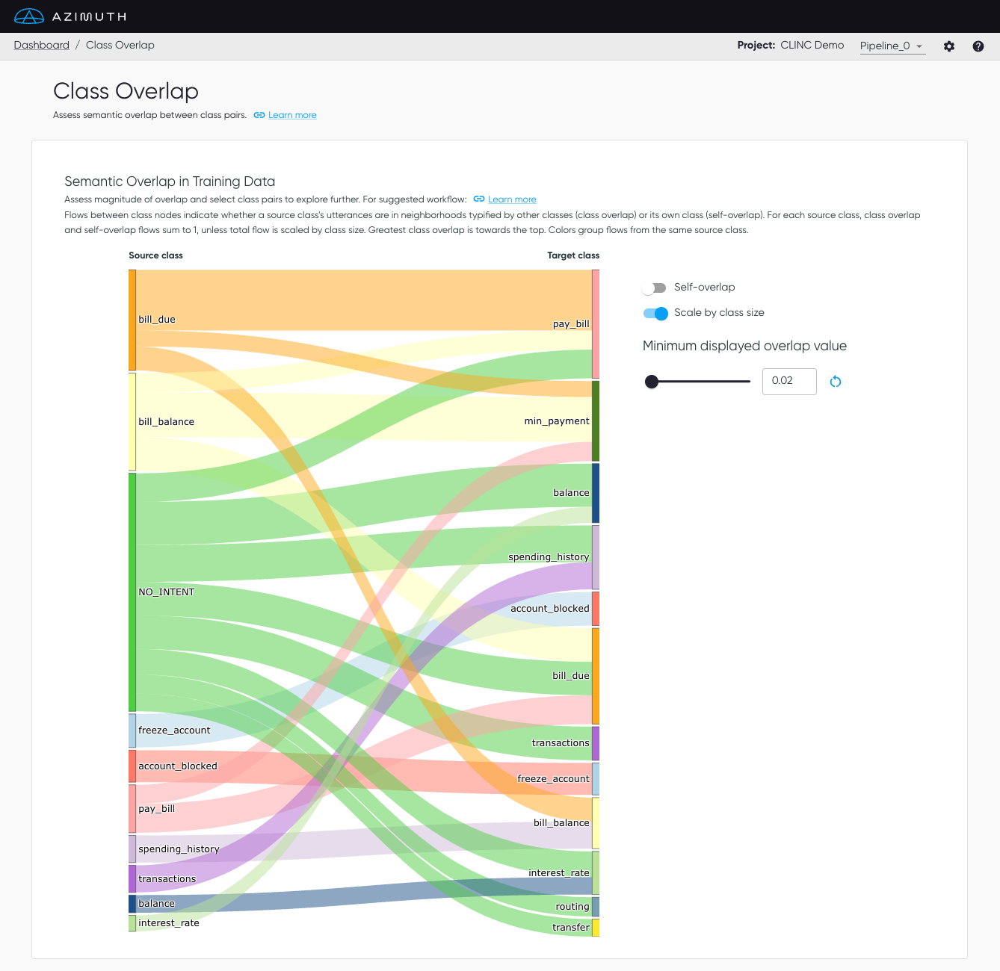

Class Overlap
Class overlap assesses the semantic overlap between pairs of classes. In some cases, high overlap may be associated with poor class definitions, mislabelling, and/or model confusion.
Class overlap is determined with a dataset alone, based on the locations of utterances in embedding space, as described in Similarity Analysis.
Class Overlap Plot
The Class Overlap plot shows the extent to which source classes semantically overlap target classes, all in the training data. The source class is the class label, and the target class is the class that the source class may look like, based on its nearest neighbors. As such, flows between class nodes indicate whether samples in a source class are in neighborhoods typified by other classes (class overlap) or its own class (self overlap). For each source class, class overlap and self-overlap values sum to 1, unless values are scaled by class size.
Overlap is displayed as flows from source class (nodes on the left) to target classes (right). Nodes are ordered with flows for greatest overlap values towards the top, so as to highlight these class pairs. Wider flows indicate greater overlap values. Colors group flows from the same source class. The plot is interactive, in that nodes can be moved and reordered via dragging.

Plot options
- Minimum displayed overlap value: This value determines which overlap flows will be displayed on the plot. Vary this value to focus on class pairs with greatest overlap, or to see all overlap to better understand the complexity of the dataset. The default value is set to the tenth-highest class overlap value for ease of visualization alone, and will differ across different datasets.
- Self-overlap: This toggle determines whether to show flows for overlap of a class with itself, to get a sense of the relative magnitude (and possibly importance) of class overlap.
- Scale by class size: Overlap values are normalized by source class, such that the sum of all class overlap and self-overlap values for a source class is 1. This toggle multiples overlap values by class sample sizes, changing node size and flow width accordingly.
Suggested workflow
The plot options described above allow for exploration of different aspects of class overlap. To navigate them, we suggest the following workflow:
1. Default view: Self-overlap off, Scale by class size on
- Start here. This view shows you the class pairs with the greatest (scaled) semantic overlap
scores in the dataset. Vary the
Minimum displayed overlap valueto see all dataset overlap or to focus on the class pairs with the greatest overlap scores. - Because
Scale by class sizeis on, this view will emphasize overlapping classes with greater sample counts. This is useful if you are less concerned about class overlap from source classes with few samples in the training data. However, if you want to further investigate classes with high overlap values but fewer samples, either for better understanding your dataset or because some classes might have high business value, then you can toggleScale by class sizeto off, as explained in step 2.
2. Toggle Scale by class size off:
- When
Scale by class sizeis turned off, total flows (class overlap and self-overlap) sum to 1. This view emphasizes class pairs with the greatest class overlap scores, regardless of whether the source class has many samples in it. - This is useful to further understand class overlap for classes that have relatively fewer samples in them, which might not have been as visible during the analysis at step 1.
3. Toggle Self-overlap on:
- For any given class, turning on
Self-overlaplets you compare the extent to which its samples semantically overlap other classes (class overlap) vs. samples of its own class (self-overlap). For example, if self-overlap is much higher than class overlap, class overlap may be less problematic for this class, and vice versa.
Tip
Click the reset button next to the overlap threshold value to reset to the default threshold.